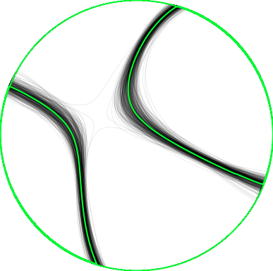
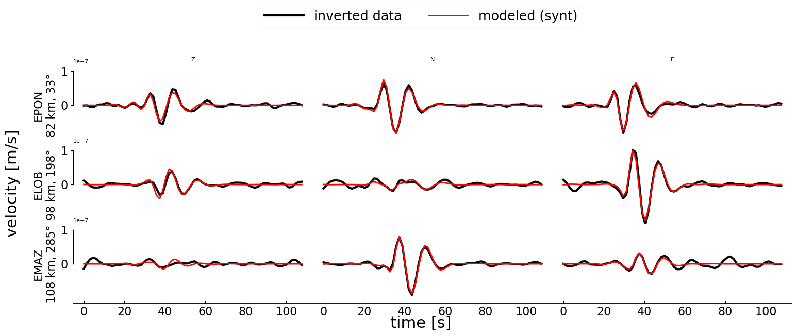

ISP Moment Tensor inversion
- Method
- Waveform inversion for full moment tensor (6 components)
with the data covariance matrix based on real noise
with crosscovariance between components.
- Reference
- Vackář, J., Burjánek, J., Gallovič, F., Zahradník, J., & Clinton, J. (2017). Bayesian ISOLA: New tool for automated centroid moment tensor inversion. Geophysical Journal International, 210(2), 693-705., PDF
Hypocenter location
- Agency
- Origin time
- 2018-08-21 00:28:57
- Latitude
- 42.710° N
- Longitude
- -7.700° E
- Depth
- 11.0 km
- Magnitude
- 3.5
Results

moment tensor best solution

moment tensor uncertainty
Centroid location
|
absolute |
relative |
| Time |
2018-08-21 00:28:56 |
0.60 s before origin time |
| Latitude |
42.710° N |
0 m of the epicenter |
| Longitude |
7.673° W |
2212 m east of the epicenter |
| Depth |
13.2 km |
2.2 km deeper than location |
Moment tensor and its quality
| Centroid position |
|---|
| depth | 13.2 km |
|---|
| Seismic moment |
|---|
| scalar seismic moment M0 | 2.28e+14 Nm |
|---|
| moment magnitude Mw | 3.5 |
|---|
| Moment tensor components |
|---|
| Mrr | 15444795921616.66 * 1e+14 |
|---|
| Mθθ | -46406664766696.09 * 1e+14 |
|---|
| Mϕϕ | 152275365894539.81 * 1e+14 |
|---|
| Mrθ | 63178703712238.73 * 1e+14 |
|---|
| Mrϕ | -29494460563293.47 * 1e+14 |
|---|
| Mθϕ | -126249506999964.53 * 1e+14 |
|---|
| Moment tensor decomposition |
|---|
| DC | 61 % |
|---|
| CLVD | 21 % |
|---|
| ISO | 18 % |
|---|
| strike | 199 / 290 |
|---|
| dip | 66 / 87 |
|---|
| rake | -3 / -156 |
|---|
| Quality measures |
|---|
| condition number | 4 |
|---|
| variance reduction | 93 % |
|---|
Histograms—uncertainty of MT parameters
Histograms—uncertainty of centroid position and time
Data used

stations used
Components used in inversion and their weights
| station | component | distance * | azimuth | fmin | fmax |
|---|
| code | channel | Z | N | E | (km) | (deg) | (Hz) | (Hz) |
|---|
| ES:EPON | HH | 1.0 | 1.0 | 1.0 | 82 | 33 | 0.04 | 0.08 |
| ES:ELOB | HH | 1.0 | 1.0 | 1.0 | 98 | 198 | 0.04 | 0.08 |
| ES:EMAZ | HH | 1.0 | 1.0 | 1.0 | 108 | 285 | 0.04 | 0.08 |
Data source
Station coordinates: /Users/robertocabieces/Documents/desarrollo/ISP2021/isp/mti/input/stations.txt

waveform fit
(non-filtered)
Stability and uncertainty of the solution
Stability in space (top view)
Stability in space (side view)
Calculation parameters
Grid-search over space
- number of points
- 105
- horizontal step
- 2212 m
- vertical step
- 2212 m
- grid radius
- 5.572 m
- minimal depth
- 5.428 m
- maximal depth
- 16.572 m
Grid-search over time
- min
- -5.57 s (-552 samples)
- max
- 5.57 s (557 samples)
- step
- 0.12 s ( 12 samples)
Green's function calculation
- Crustal model
- /Users/robertocabieces/Documents/desarrollo/ISP2021/isp/mti/input/Iberia.dat
- npts
- 128
- tl
- 199.68
- freq
- 65
- npts for inversion
- 70
Sampling frequencies
- Data sampling
- 100.0 Hz, 100.0 Hz, 100.0 Hz
- Common sampling
- 100.0 Hz
- Decimate factor
- 156 x
- Sampling used
- 0.6 Hz


{kind=link}
{kind=link}
{kind=link}
{kind=link}
{kind=link}
{kind=link}
{kind=link}
{kind=link}
{kind=link}
{kind=link}
{kind=link}
{kind=link}
{kind=link}
{kind=link}
{kind=link}